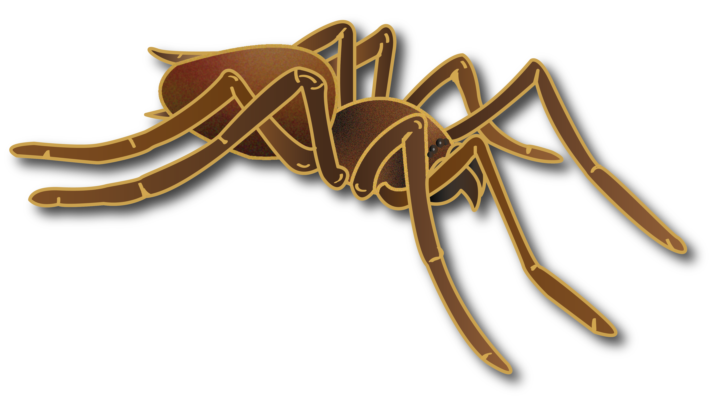

Spider-Normal Man’s Insect
05/07/2020Most of us, if asked ‘Is spider an insect?’ will answer yes. But, is the answer correct?
Let’s try to find out. The word insect is derived from the Latin word insectum which means cut or divided into segments. The Latin word was created to translate the Greek word for insect which is entomon. Due to this, the scientists that study insects are called entomologists.

An insect’s body is divided into 3 parts namely- head, thorax and abdomen whereas in case of spiders can be divided into cephalothorax (combined head and thorax) and abdomen. Insects have six legs or 3 pairs whereas spiders have 8 legs or 4 pairs. This means they have differences in their major body parts. Now let’s look into their minor body parts. Everyone knows that insects have 2 antennae but have you seen a spider with antennae. Well spider have pedipalpe. They may look like small legs but are not used like legs instead their work is more like sensing objects. Insects use their mandibles to consume food. As for spiders, they use their chelicerae to consume their food. It may sound like both are performing the same function then why they have different names. Well there is a difference in shape between the two, chelicerae are pincer like while mandibles are jaw like. Spiders lack mouthparts for chewing unlike insects which have a pair of mouthparts for chewing and cutting. Due to this, spiders need to predigest food and nutrient in liquid form. This they do by entrapping their prey in the web then injecting venom and covering the prey with the web. With time the venom or secretions injected by the spider digests the prey’s body and the spider have the liquid meal to feed on. Also, insects have a pair of compound eyes but in case of spiders they have four pairs of simple eyes. Well now we know that spiders and insects have differences in their major as well as minor body parts.
Both insects and spiders have jointed legs and other similarities which makes fall under the same phylum of Arthopoda (Greek Arthon=joint and podos=foot). But due to their varying differences they belong to different classes. Insects belong to the class Insectae while spiders are placed in the class Archanida. So, spiders and insects are arthopods but spiders are not insects.
Author :
ASHWIN SHARMA
Related Articles

Social Insects And Pandemics
NewPandemic, a word with which we all are familiar with. Pandemics have happened as late as 3000 BC (of which we have record of). Humans know how to prevent and treat diseases. We have a vast knowledge of diseases and we are trying to learn more from the new diseases. But what ...

The Termite Mounds
NewCan you imagine that a termite, which is barely the size of a fingernail, when coming together in a million or two, can build mounds that can reach a height of 17 feet or even more!? Termites live in large social colonies includes...

Why is arthopod conservation important?
NewWe have all seen these tiny little creatures around us so many times, they can be seen inside your house, park, or office, they are everywhere. They have so many diverse and fascinating forms...